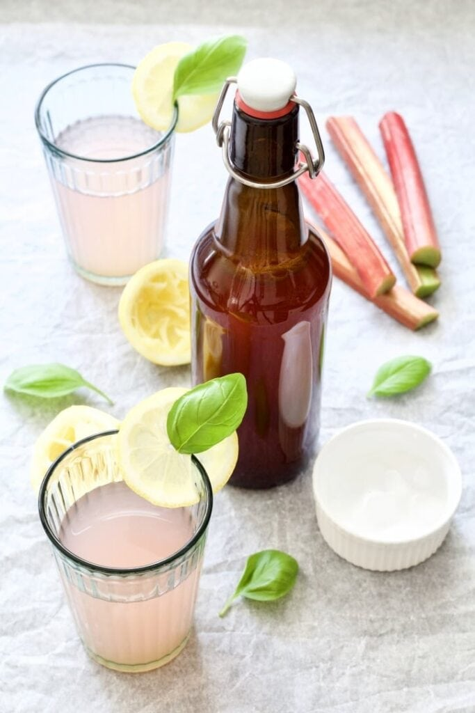

Rhubarb cordial

Rhubarb cordial recipe by Miriam Nice from BBC Good Food.
The recipe takes around 20 minutes to make and serves 600ml of cordial.
Ingredients
- 300g golden caster sugar
- zest and juice 1 orange
- zest and juice 1 lemon
- 450g rhubarb, chopped
- 1 slice fresh root ginger, peeled
Method
- Put the sugar in a large saucepan with 300ml water. Bring to a simmer then add the zest and juice of both the orange and the lemon along with the rhubarb and the ginger.
- Cook the mixture over a medium heat until the rhubarb is falling apart.
- Pour the mixture through a sieve lined with muslin into a clean heatproof jug then transfer to sterilised bottles. Keeps in the fridge for up to 1 month.
- Serve approx. 25ml of cordial per 100ml sparkling water, or to taste.